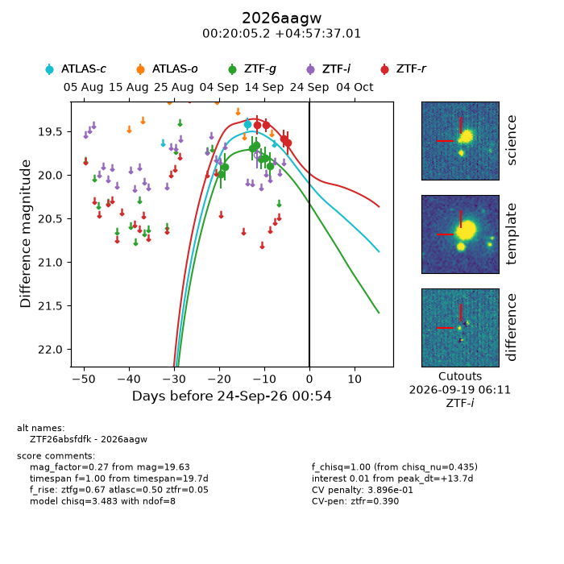
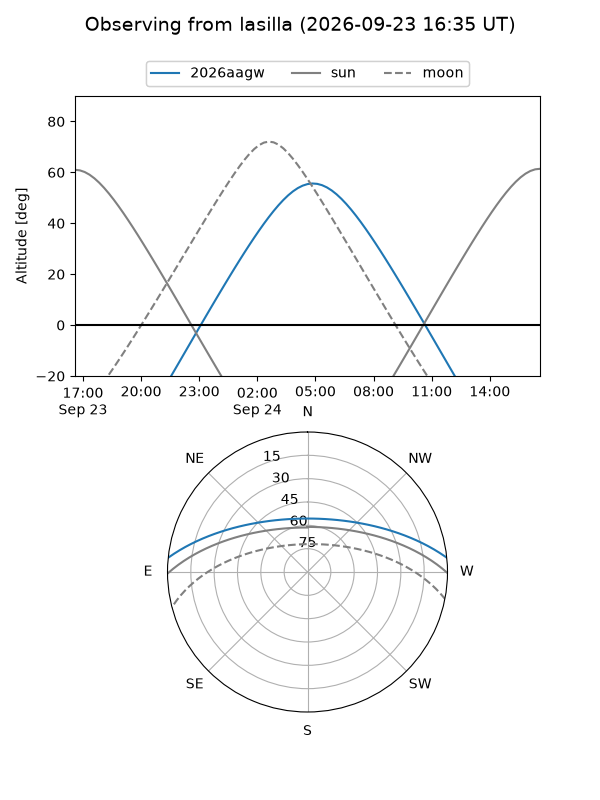
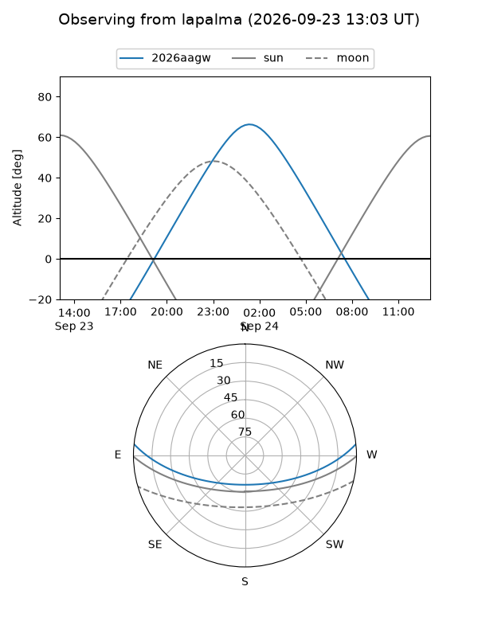
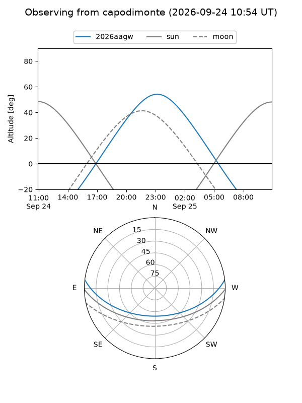
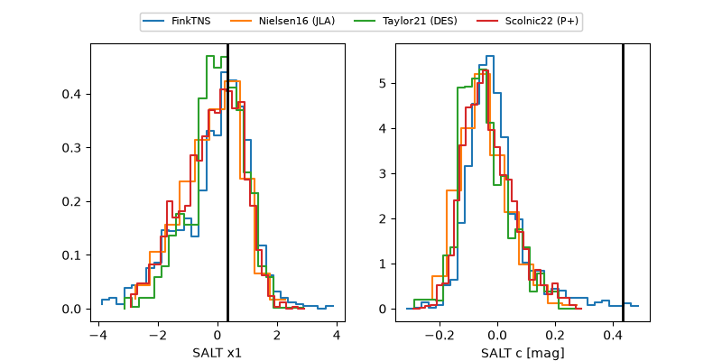

2026aagw
Target 2026aagw at 2026-09-24 12:54
Aliases and brokers:
FINK-ZTF: ztf.fink-portal.org/ZTF26absfdfk
Lasair-ZTF: lasair-ztf.lsst.ac.uk/objects/ZTF26absfdfk
ALeRCE-ZTF: alerce.online/object/ZTF26absfdfk
YSE-PZ: ziggy.ucolick.org/yse/transient_detail/2026aagw
TNS name: wis-tns.org/object/2026aagw
Direct TNS query: direct search
alt names
ZTF26absfdfk (ztf,fink_ztf)
2026aagw (tns,yse)
Coordinates:
equatorial (ra, dec) = 5.0216,+4.96028
equatorial (HMS+DMS) = 00:20:05.19,+04:57:37.01
galactic (l, b) = (108.4755,-57.02889)
Flags:
TNS type: nan
peak dt: +14.2
likely cv: !!
Photometry:
last atlasc=19.41, ztfg=19.90, ztfr=19.63
1 atlasc, 7 ztfg, 4 ztfr detections
Lightcurve

Visibility



Additional plots
